| Accueil | Activités | Bilan | Options / Réglages | Développeurs |
| 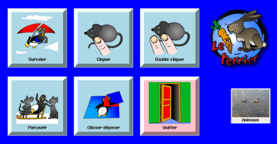 |
L'activité "survoler" consiste à déplacer la souris pour atteindre des cases rouges placés sur l'écran pour faire apparaître une image cachée. A chaque fois que toutes les cases sont survolées, l'image complète apparaît.
Au niveau suivant, les cases sont plus petites que les précédentes et placées à d'autres endroits aléatoirement. Les images sont aussi tirées aléatoirement dans le dossier de la catégorie d'images choisi au départ.
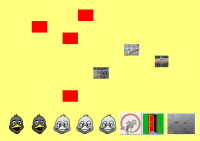 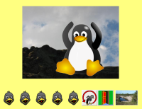
L'activité "cliquer" consiste à cliquer une seule fois simplement dans des cases rouges. Une fois toutes cliquées, ces cases laissent apparaître l'image cachée complète. Au niveau suivant, la taille des cases diminue et leur place change aléatoirement. Les images sont tirées aléatoirement dans le dossier de la catégorie d'images choisi au départ.
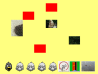 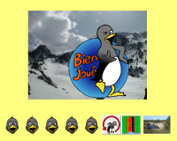
L'activité "double-cliquer" est la même que "cliquer", mais il faut cliquer deux fois. La taille des cases rouges devient plus petite à chaque niveau.
Dans cette activité, il s'agit de suivre un chemin précis. Il faut donc débuter en cliquant simplement sur une case rouge puis suivre le chemin vert indiqué, une fois le bouton de la souris lâché. A chaque case verte survolée, une partie de l'image se découvre. Si, par mégarde, le chemin était quitté, les cases ne sont plus découvertes et il faut reprendre le chemin là où on l'a quitté.
A niveau suivant, le chemin devient de plus en plus tortueux.
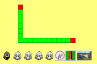 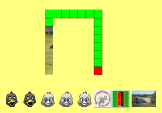 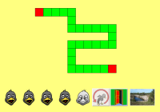
Il s'agit dans cette activité de reconstituer un puzzle. les pièces se trouvent sur la gauche et doivent être replacer au bon endroit. L'enfant doit donc cliquer sur une des pièces et sans lâcher le bouton de la souris, déplacer cette pièce au bon endroit. Si le bouton de la souris est lâché avant ou si la place de la pièce n'est pas la bonne, la pièce revient à sa place initiale.
Au niveau suivant la taille des pièces devient plus petite.
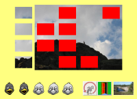 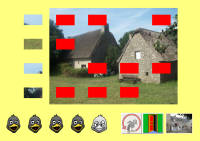
A chaque fin d'une série d'images d'une activité, un petit pingouin vainqueur apparaît pour signaler la fin de l'activité.
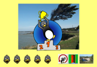